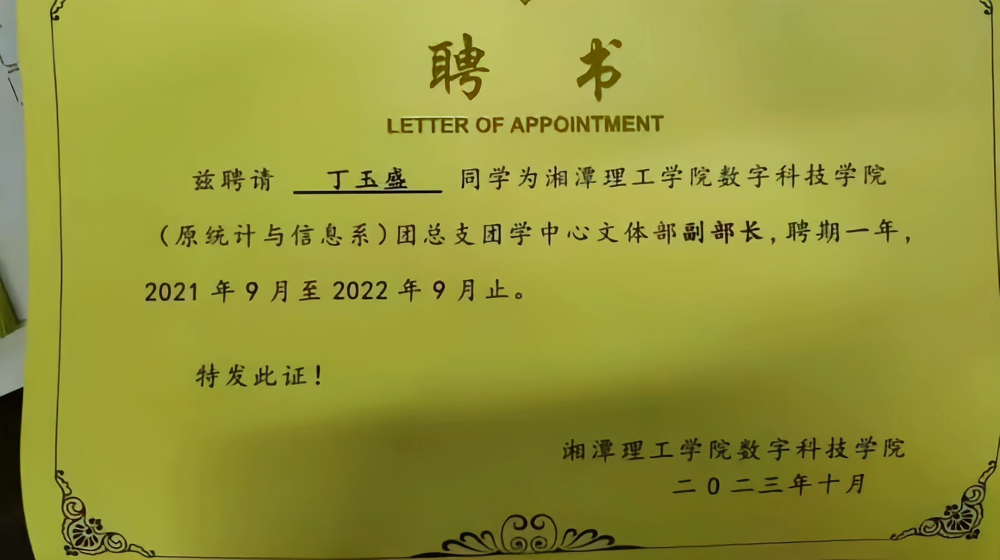
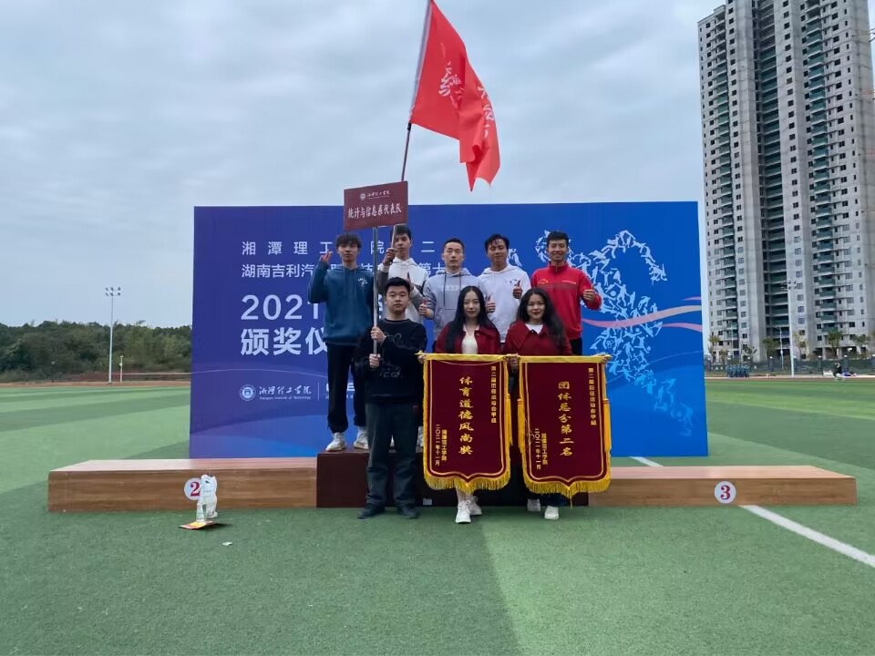
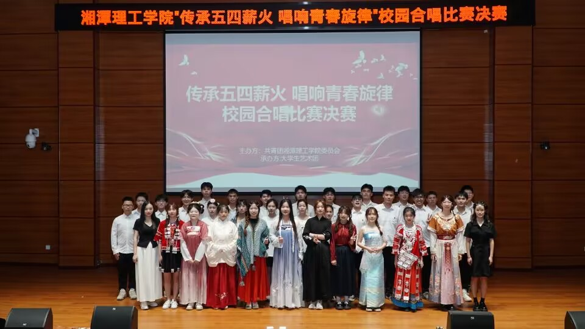
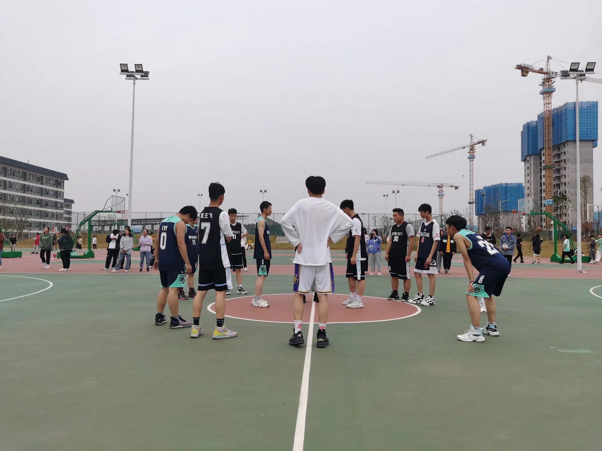
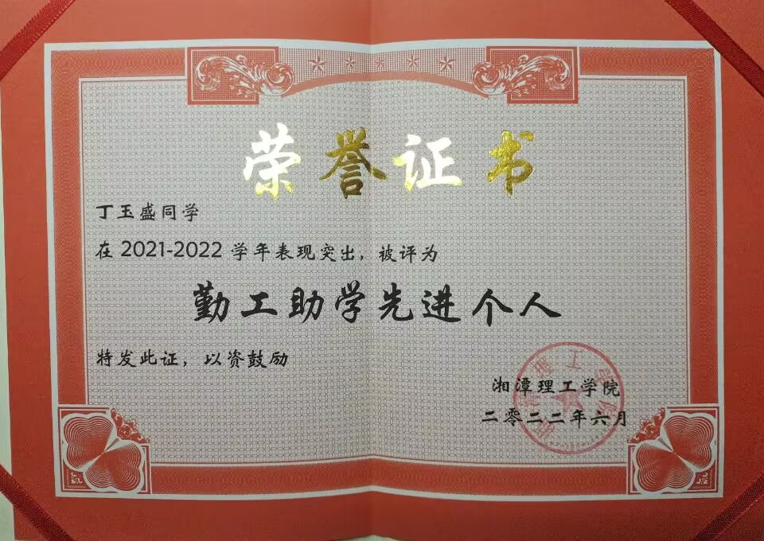
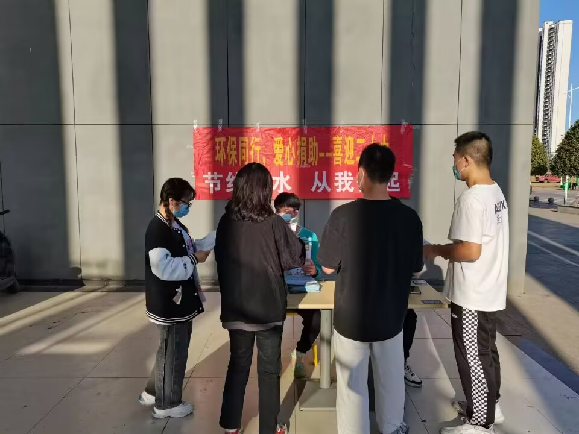
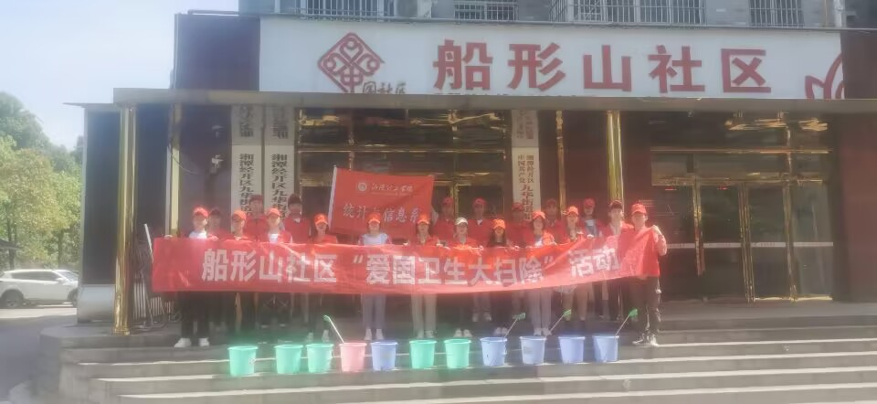
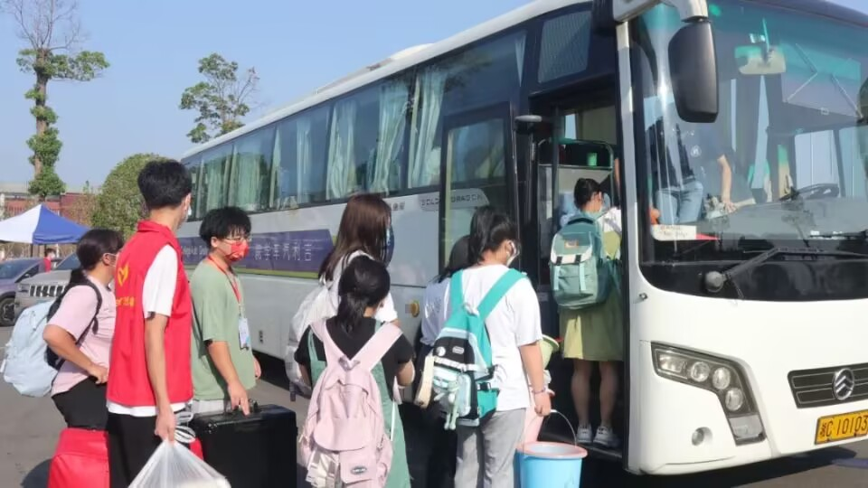

校园经历
-
经历一：2021.9-2022.9 数字科技学院文体部副部长
负责组织策划学院文体活动，成功举办过篮球赛、乒乓球赛、五四合唱比赛、朗诵比赛等一系列比赛。
    -
经历二：2022.9-2023.6 学生处厕所义工岗勤工俭学负责人
负责每天检查厕所卫生情况，维护教学楼厕所卫生环境，并积极组织厕所义工岗位的同学参与志愿服务。
    -
经历三：两次暑期三下乡社会实践活动
连续两年(2021、2022)在湖南汨罗长乐镇开展暑期三下乡社会实践活动，活动内容包括志愿服务活动（旧电池衣物回收志愿者、街道清扫志愿者、义修志愿者等）、实地采风调研、爱心暑托班、防溺水理论宣讲、低碳环保知识宣讲等，活动内容丰富，社会效果良好。